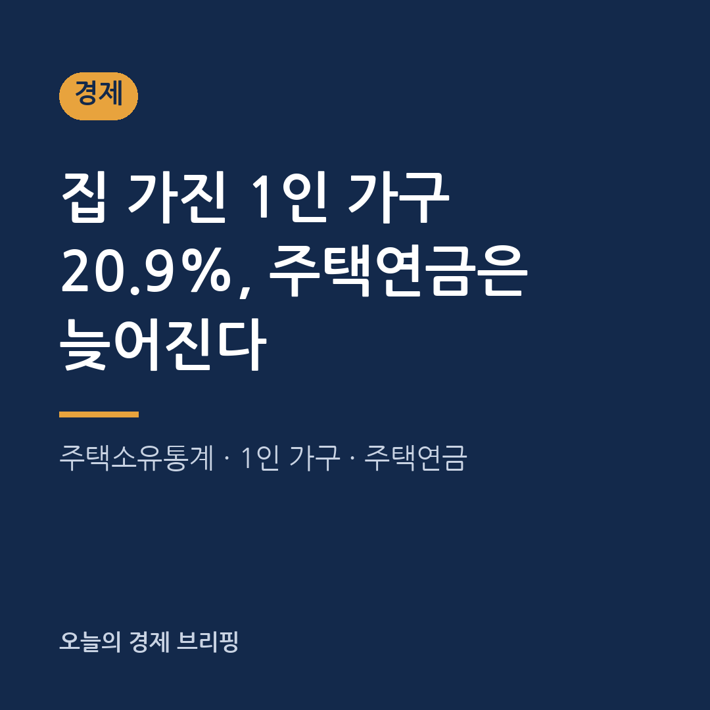
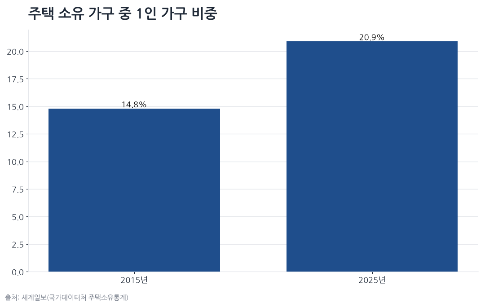
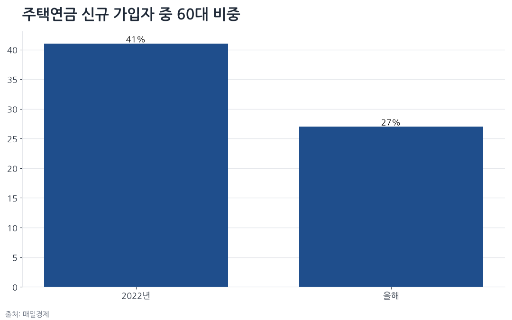

2026-11-22-1528-naver 발행 키트 · 이 페이지는 검색에 노출되지 않습니다.
제목
카테고리
경제태그
본문 (그림·표 포함)
휴대폰 블로그 앱에서는 그림이 같이 붙지 않을 수 있어요. 그때는 [글자만 복사] 후 아래 이미지를 저장해 [그래프1]·[표1] 자리에 첨부하세요.
요즘 부모님 노후 이야기, 아니면 내 노후 이야기를 한 번쯤 해보셨죠? 오늘은 집과 노후가 만나는 두 가지 소식을 묶어서 풀어볼게요.

▶ 집주인 두 집 중 한 집 넘게 1~2인 가구예요
국가데이터처가 발표한 주택소유통계를 보면, 2025년 11월 1일 기준으로 집을 가진 가구는 모두 1,296만 5,000가구예요.
이 가운데 1인 가구가 270만 9,000가구로 20.9%, 2인 가구가 449만 8,000가구로 34.7%를 차지해요. 둘을 합치면 55.6%라서, 집주인 두 집 중 한 집 넘게 혼자 또는 둘이 사는 집인 셈이에요.
주택 소유 가구 구성 (2025년 11월 1일 기준)
| 구분 | 가구 수 | 비중 |
|---|---|---|
| 1인 가구 | 270만 9,000 | 20.9% |
| 2인 가구 | 449만 8,000 | 34.7% |
| 1·2인 합계 | 720만 7,000 | 55.6% |
출처: 세계일보(국가데이터처 주택소유통계)
▶ 혼자 사는 집주인, 10년 새 6.1%p 늘었어요
특히 눈에 띄는 건 1인 가구예요. 집을 가진 가구 중 1인 가구 비중이 2015년 14.8%에서 2025년 20.9%로 올랐어요. 통계를 내기 시작한 뒤 가장 높은 수준이에요.

늘어난 사람들을 나이로 나눠 보면 60세 이상이 10만 5,000가구로 가장 많았어요. 1인 가구 주택 소유가 지난해보다 13만 7,000가구 늘었으니, 증가분의 4분의 3쯤이 60세 이상인 거죠.
▶ 그런데 주택연금은 점점 늦게 가입해요
주택연금(집을 맡기고 평생 매달 연금을 받는 제도)에도 비슷한 흐름이 보여요. 신규 가입자 나이가 해마다 높아지고 있거든요.
올해 신규 가입자 네 명 중 한 명은 80대예요. 반대로 60대 비중은 4년 사이 41%에서 27%로 줄었어요. 70~80대는 늘었고요.

기사에서는 기대수명이 길어지고 집값이 오른 게 이유로 꼽혔어요. 오래 살수록 집을 맡기는 시점을 뒤로 미루고, 집값이 오른 만큼 굳이 서둘러 연금으로 바꿀 필요를 덜 느끼는 분이 많다는 뜻으로 읽혀요.
▶ 내 생활엔 어떤 영향이 있을까요
집은 있는데 현금 흐름이 부족한 분이라면 노후 설계를 조금 일찍 시작해 보는 게 좋아요. 주택연금을 지금 쓸지 나중에 쓸지는 집값, 나이, 생활비에 따라 달라지니까요.
또 하나, 일하는 기간도 변수예요. 고용노동부 장관은 정년 연장 문제를 두고 27일 여당 특별위원회에서 합의가 안 되면 정부가 나서겠다고 했어요. 정년이 늘면 연금을 받기 시작하는 시점과 일하는 시점의 계산도 달라질 수 있어요.
▶ 체크해 볼 것들
첫째, 우리 집이 누구 명의이고 가구 구성이 어떤지 정리해 두세요.
둘째, 주택연금은 가입 조건과 월 수령액을 금융기관 안내로 직접 확인해 보세요.
셋째, 27일 정년 연장 논의 결과를 지켜보세요.
집이 노후의 든든한 버팀목이 되려면 언제, 어떻게 쓸지 미리 정해 두는 게 중요하더라고요. 여러분은 노후 준비를 어디까지 해두셨나요? 댓글로 이야기 나눠 주세요.
이미지 (개별 복사·저장)
출처 (본문 맨 아래에 붙여넣기 권장)
- 세계일보, 집주인 절반 이상이 1·2인 가구…1인 가구 주택 소유 역대 최고, https://www.segye.com/newsView/20261122506162 - 매일경제, 주택연금 갈수록 늦게 가입…60대 줄고 70~80대 증가, https://www.mk.co.kr/news/economy/12215480 - 연합뉴스, 노동장관 "정년연장, 27일 與특위 합의 안 되면 정부 나설 것"(종합), https://www.yna.co.kr/view/AKR20261122019051530